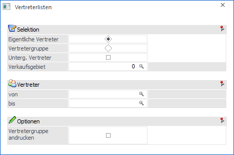
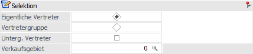
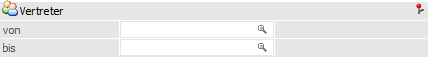
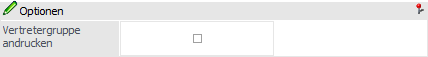

Im Programmpunkt…
1 WinLine FAKT
1 Auswertungen
1 Vertreterauswertungen
1 Vertreterlisten
… können die Vertreterstammdaten (Vertreternummer, Adresse, Zusatzfelder - falls vorhanden - und Verkaufsgebiet) ausgewertet werden.

Die Ausgabe kann durch folgende Kriterien eingeschränkt bzw. beeinflusst werden:
Selektion

Ø Eigentliche Vertreter / Vertretergruppen
An dieser Stelle kann entschieden werden, ob nur die "eigentlichen" Vertreter oder die Vertretergruppen ausgewertet werden sollen.
Ø Unterg. Vertreter
Wird diese Option aktiviert, so werden zusätzlich zu den Vertreterdaten auch die untergeordneten Vertreter (-gruppen) ausgewertet. D.h. diese werden zusätzlich mit Namen angegeben.
Hinweis
Unabhängig von dieser Option werden die Hierarchiedaten - d.h. Hierarchiestufe, sowie der übergeordnete Vertreter, ausgewiesen.
Ø Verkaufsgebiet
Zusätzlich kann an dieser Stelle noch auf ein Verkaufsgebiet eigegrenzt werden, für welches die Liste ausgegeben werden soll.
Vertreter / Vertretergruppe

Ø Vertreter von / bis bzw. Vertretergruppe von /bis
Mit Hilfe dieser Selektionsfelder kann die Vertreterliste auf einen Vertreter- bzw. Vertretergruppenbereich eingeschränkt werden.
Optionen

Ø Vertretergruppe andrucken
Durch Aktivieren dieser Option wird eine Liste ausgegeben, auf welcher alle Vertretergruppen ersichtlich sind, in denen ein bestimmter Vertreter hinterlegt ist.
Buttons

Ø Ausgabe Bildschirm
Mit Hilfe des Buttons "Ausgabe Bildschirm" oder der Taste F5 wird die Auswertung am Bildschirm ausgegeben.
Ø Ausgabe Drucker
Durch Anwahl des Buttons "Ausgabe Drucker" wird die Auswertung am Drucker ausgegeben.
Ø Ende
Durch Anwahl des Buttons "Ende" bzw. der Taste ESC wird die Auswertung geschlossen.
Ø Voreinstellung speichern
Durch Anwahl dieses Buttons erfolgt eine benutzerspezifische Speicherung aller im Fenster getätigten Einstellungen. Diese sogenannten "Voreinstellungen" können jederzeit wieder abgerufen werden und ermöglichen dadurch ein schnelleres und zielorientierteres Arbeiten (nähere Informationen entnehmen Sie bitte dem Kapitel "Die Voreinstellungen").